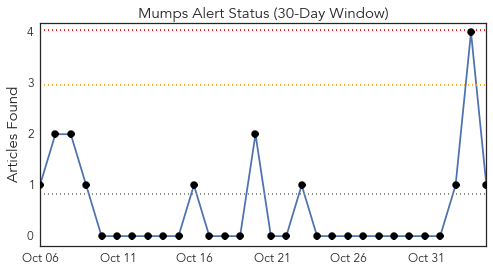
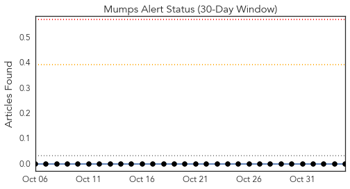
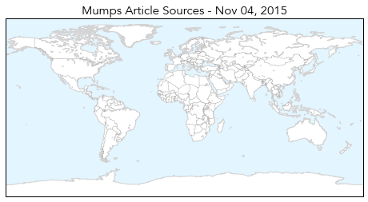
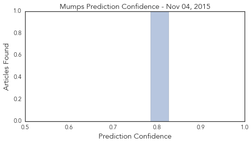
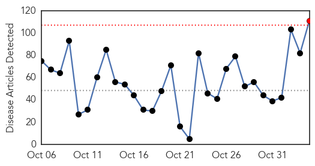
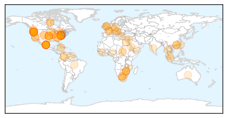
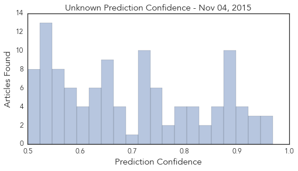

Mumps
30-Day Web Trend
0 alerts, 0 warnings

30-Day Twitter Trend
0 alerts, 0 warnings

Article Locations
Article Confidences
Top Articles:
Top Tweets:
-
No tweets found for Nov 04, 2015
Unknown
30-Day Web Trend
1 alerts, 0 warnings

30-Day Twitter Trend
0 alerts, 0 warnings

Article Locations
Article Confidences
Top Articles:
- 0.968
- 1,300 Patients at Pennsylvania Hospital may Have Been Exposed to Dangerous Bacteria
- 0.962
- Chipotle's E. coli outbreak continues to grow
- 0.955
- E. Coli Outbreak Forces Chipotle To Close Portland, Seattle Stores
- 0.938
- Oregon Cases of E. Coli Linked to Chipotle Now at 12
- 0.930
- How was the bacteria at York Hospital found?
- 0.926
- Colorado Typhoid Fever Cases Linked To Qdoba Mexican Restaurant — Risk To General Public Is 'Very, Very Low'
- 0.912
- Symptoms of E. coli reported from Deschutes County; Bend Chipotle location remains open
- 0.912
- Symptoms of E. coli reported from Deschutes County; Bend Chipotle location remains open
- 0.907
- Oregon agency probes E. coli cases linked to Chipotle - Story
- 0.904
- Scarlet fever making a comeback…
- 0.897
- It's back: UQ researchers track re-emergence of scarlet fever
- 0.896
- Toxic water scare rocks Cradock as several fall ill
- 0.895
- Flu vaccine is a must to protect children
- 0.894
- Update: 37 People Sickened With E. Coli Linked to Chipotle Restaurants
- 0.884
- Chipotle E. coli O26 Numbers Rise to 37 in Washington and Oregon
- 0.882
- Cryptosporidium Outbreak in Pike County, IL Linked to Apple Cider
- 0.882
- Health Officials Expect More E. Coli Cases Linked to ChipotleNewsInferno
- 0.879
- Flu vaccine shipment delays hit parts of Knox County
- 0.879
- E. Coli Cases Inch Up In Washington . News
- 0.878
- CDC: More food poisoning outbreaks cross state lines
- 0.873
- The STD hiding in plain sight
- 0.868
- Canada: Gonorrhea in Yukon up dramatically
- 0.866
- nmWRAPUP 4-Rivals China, Taiwan to hold surprise meeting weeks before island's elections
- 0.854
- Forum: Vaccines and the freedom of choice
- 0.849
- Investigators closing in on source of Chipotle E. coli outbreak
- 0.839
- More food poisoning outbreaks cross state lines
- 0.819
- Latent TB - the invisible killer
- 0.815
- The Latest on Chipotle E. coli Outbreak in Washington & Oregon - NBC Right Now/KNDO/KNDU Tri-Cities, Yakima, WA
- 0.809
- 37 people ill from E. coli outbreak linked to Chipotle, first lawsuit filed — RT USA
- 0.807
- Chipotle closes dozens of locations as more confirmed E.coli cases emerge
- 0.801
- Chipotle Closing More Restaurants?
- 0.801
- Health Minister meets with CARPHA to address regional issues related to NCDs
- 0.794
- More Chipotle E. Coli cases confirmed in Ore., Wash.
- 0.787
- Rare Multistate Outbreaks Cause the Most Foodborne Illness Deaths, CDC Says
- 0.773
- The Portland Press Herald / Maine Sunday Telegram
- 0.761
- Most of the 37 people sickened by E. coli ate Chipotle
- 0.753
- E. Coli Outbreak Forces Chipotle to Shut Seattle, Portland Stores
- 0.748
- Malaria, maternal deaths in South Darfur camp - Sudan
- 0.746
- Chipotle E. coli Case Count Grows to 25 in Washington
- 0.745
- Health officials confirm more Chipotle E. Coli cases in Oregon
- 0.740
- Experts 'amazed' by tapeworm that spread tumors to man
- 0.737
- Health Highlights: Nov. 4, 2015
- 0.730
- US says detected heat flash around Russian jet before crash
- 0.730
- Taiwan and China leaders to hold first meeting since 1949
- 0.730
- First refugees to be relocated from Greece head to Luxembourg
- 0.730
- Hollande’s ‘informal’ visit to nurse was highly choreographed, media say
- 0.730
- France to tackle work hours as part of ‘ambitious’ labour reform
- 0.730
- Experts examine black boxes of crashed Russian jet
- 0.730
- Is China using historic talks to prop up Taiwan's pro-Beijing ruling party?
- 0.725
- Atlantic Windows outbreak after Amherst event likely norovirus
Showing top 50 articles...
Top Tweets:
- 0.654
- RT: De la crise politique en Haiti : quelle légitimité pour un chef d'Etat choisi par à peine 20% des électeurs?
- 0.567
- WHO and the Malawi Ministry of Health are training community health workers to treat common childhood diseases https://t.co/Q4BxBMFZeC
- 0.527
- By working closely together, clinical medicine & public health can help each other improve health maximally https://t.co/B9OV2jnL7D